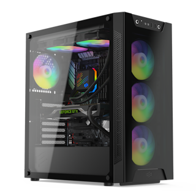
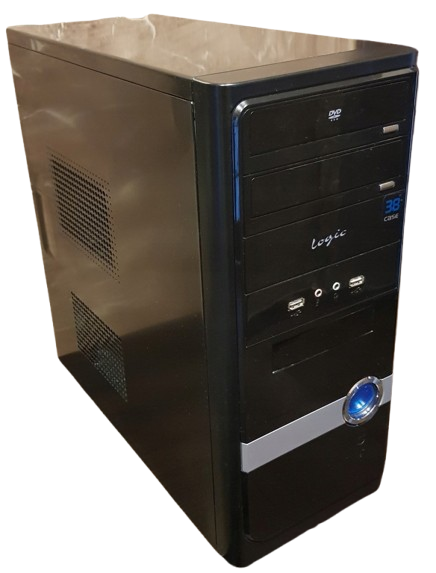
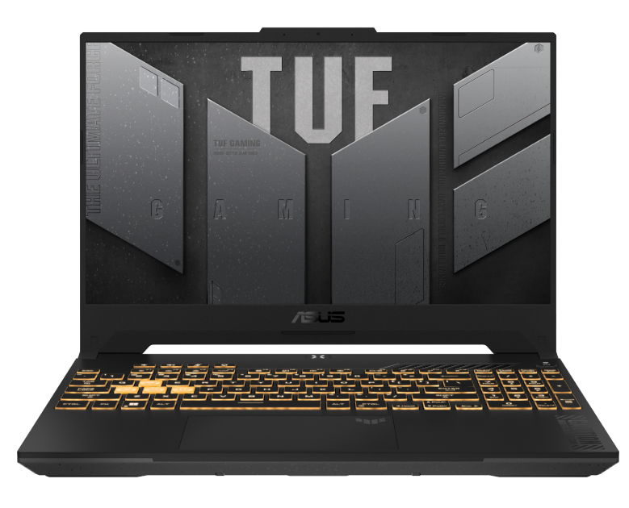
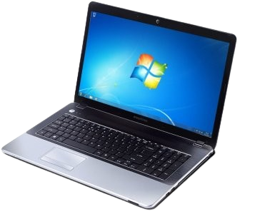

Komputery
Mój główny komputer, który mam od 2020 roku, kupiony za hajs z komunii XDDD (tak było nie zmyślam), oryginalnie miał Ryzena 7 3700X, 16GB Ramu 3200MHz od Corsaira, RX 570 od XFXa, 512GB M.2 od ADATy, jak i kolejne 512GB od ADATy tym razem na SATA, i w dodatku 2TB HDDk od Segate, a to wszystko na płycie B550 AORUS ELITE. Od tego momentu zmieniłem GPU na GTXa 970 od Gigabyta bo mi się RX spierdolił, dołożyłem kolejną 512 od ADATy, i wypierdoliłem dysk 2TB za okno bo mi się gryzie z moim komputerem.
Ten komputer dostałem za darmo od cioci w 2019 roku, i był to mocny upgrade z mojego starego kompa (HP Compaq 6005 Pro Midtower jeśli pamiętam). Miał i3-2120, 4GB Ramu, GTXa 560 i brak dysków. Dołożyłem do niego 16GB ramu, dysk 512GB od ADATy, i RXa 570. Do dziś go mam, lecz tak naprawde nic na nim teraz nie robie. Nawet Linux go nie odratuje XD. Ostatnio Mint 22.1 instalowałem 1,5 godziny na nim, po to aby tylko uruchamiał się przez 15 minut XDDD
Powiem to od razu. Za tym laptopem nie przepadam. To że ma nawet lepszą specke niż mój główny komputer, dokładniej ma i5 12500, 16GB Ramu, 512GB M.2 i RXTa 3050, nie oznacza że wole go używać niż mojego kompa. Chętnie go zareklamuje aby dostać pieniądze z powrotem, bo to jest totalna tragedia. Wczoraj zawiesił mi się 3 razy w ciągu 30 minut, a dzień wcześniej z co najmniej 7 razy. Jeśli ktoś mi powie że to wina systemu, to nie. TEN CHUJ CZASAMI SIĘ ZAWIESZAŁ PODCZAS ŁADOWANIA SYSTEMU JAK I W INSTALATORZE WINDOWSA. Jeśli dostanę zwrot pieniędzy, kupuje od razu Thinkpada T480s.
Powiem to od razu. Ten laptop był częścią mojego dzieciństwa. Na nim grałem w Purble Place w wolnym czasie, i takie rzeczy. W tamtym czasie, ten laptop był komputerem służbowym mojego taty, który później został komputerem do skanowania dokumentów, a finalnie trafił w moje ręce. Miał 3GB Ramu, dysk HDD 320GB, Phenoma II jeśli pamiętam, ale zmieniłem w nim baterię, ram na 8GB (max da tego laptopa) i zmieniłem dysk na 512GB od ADATy, który trafił do mojego głównego kompa. Aktualnie zepsułem w nim zawias, który będe chciał naprawić, a może nawet zmienić w nim baterię ponieważ GreenCell nie jest dobrym pomysłem (zdechła po roku).
